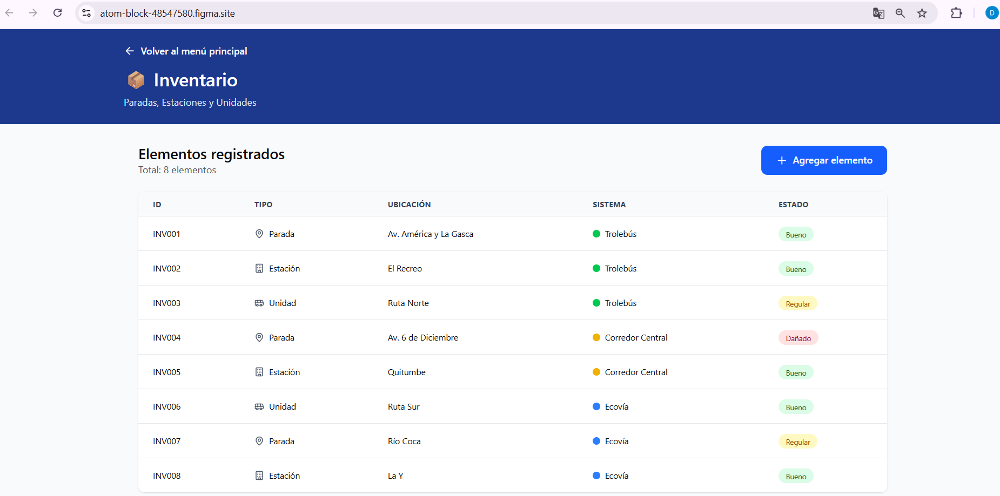
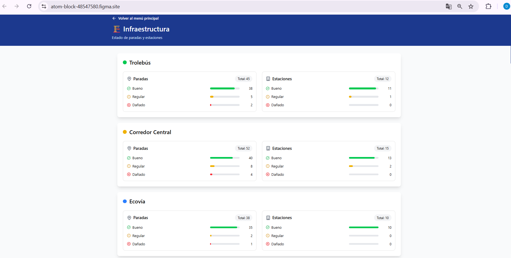
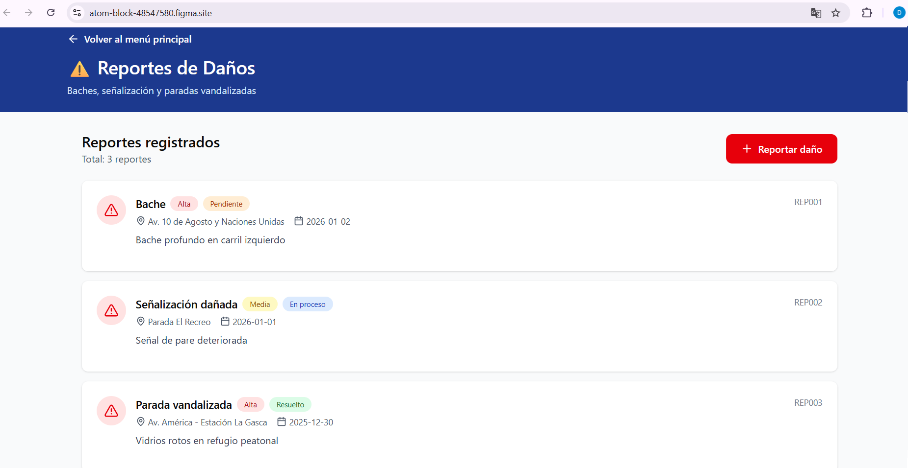
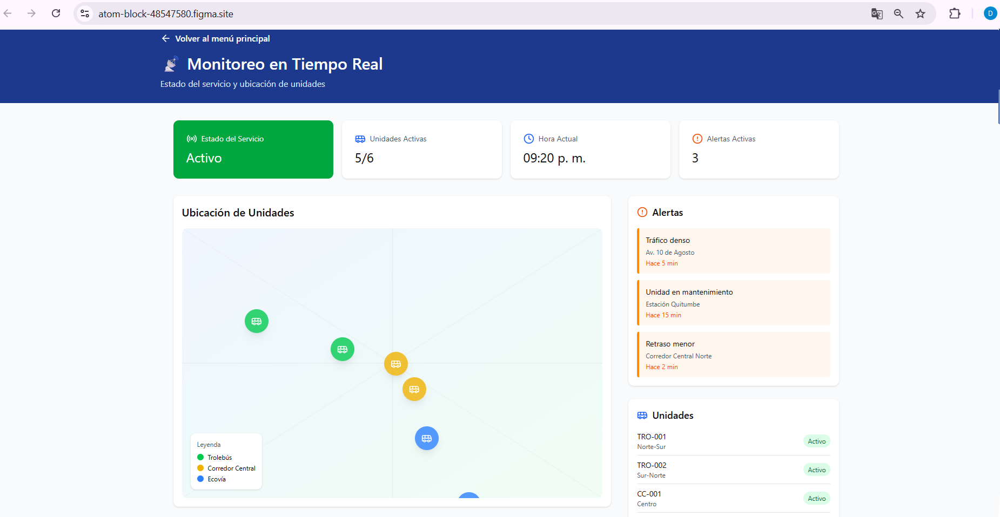
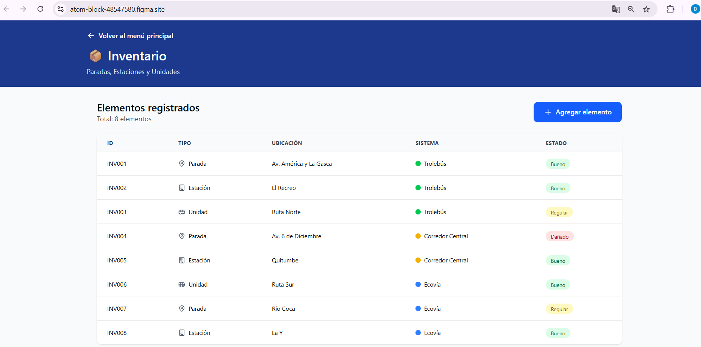
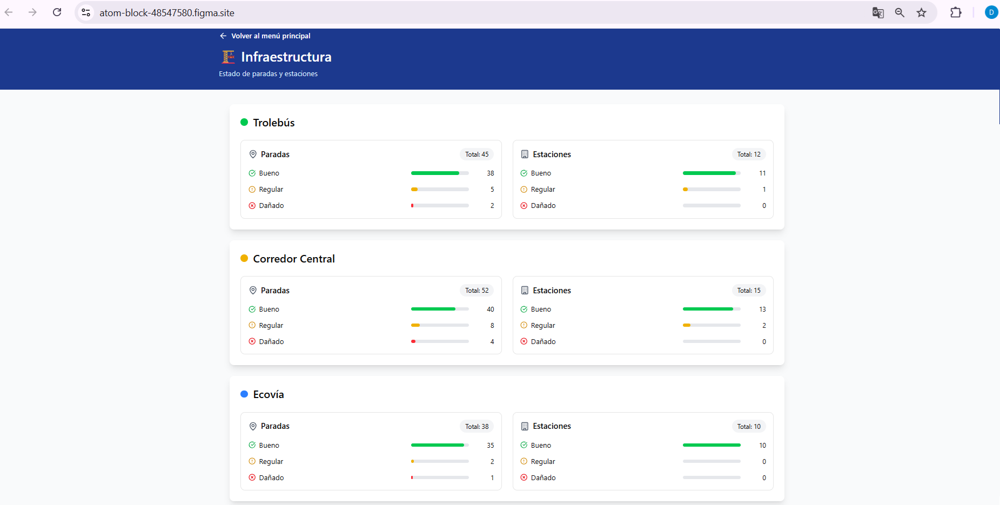
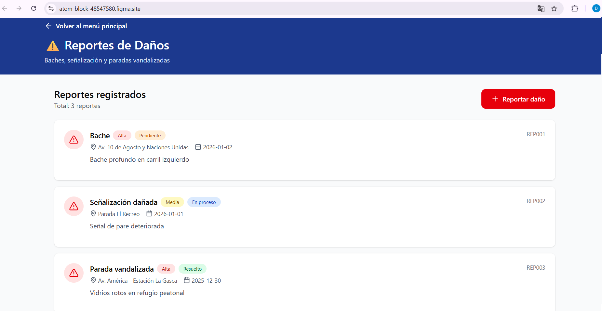
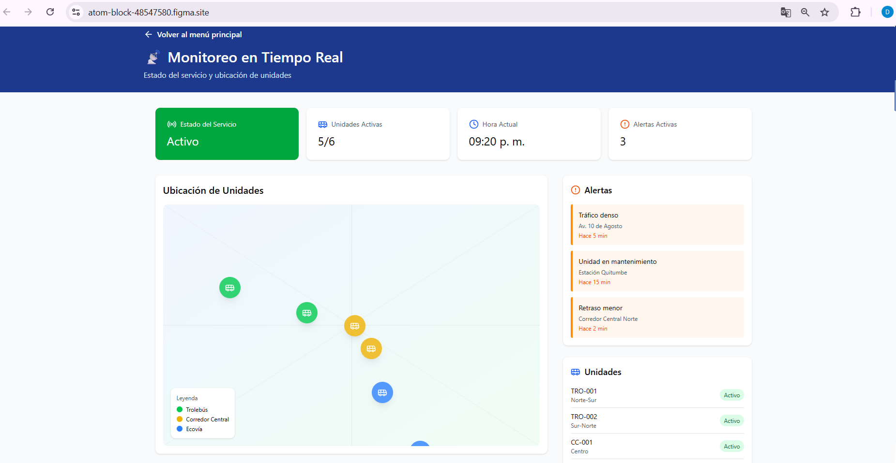

Inventario, Control de Infraestructura y Monitoreo
Diseño de una página web para el inventario, control de infraestructura, reportes de daños y monitoreo en tiempo real del sistema de transporte público, que incluye paradas y estaciones del Trolebús, buses del Corredor Central y Ecovía.
Primera reunión
Se realizó una primera reunión con el cliente, representante del sistema de transporte público, con el objetivo de conocer la situación actual y los problemas existentes en el control de infraestructura.
Identificación de necesidades
El cliente manifestó la necesidad de contar con un sistema que permita controlar el estado de paradas, estaciones y unidades, así como llevar un registro de daños y mantenimientos.
Preguntas realizadas
Usuarios del sistema
Funciones principales
Pantallas necesarias
Restricciones
El proyecto corresponde únicamente a la fase de diseño. No incluye programación ni desarrollo funcional.
Procesos y reglas de negocio
Todo daño debe ser registrado, clasificado y tener un estado (pendiente, en proceso o solucionado).
Casos de uso
Wireframes
Se realizaron bocetos iniciales para definir la estructura, navegación y jerarquía visual del sistema.
Prototipos en Figma
Se diseñaron prototipos de alta fidelidad en Figma para representar la interfaz completa del sistema.
Arquitectura visual
El diseño se basa en un panel central con módulos independientes para facilitar la navegación y el uso del sistema.
Enlace al proyecto Figma:
https://atom-block-48547580.figma.site/
Enlace de respaldo de las actividades en Figma (Google Drive):
Capturas de respaldo del diseño:
 







Nota: Este examen corresponde únicamente a la fase de diseño del sistema. No incluye programación. El diseño fue aprobado por el cliente antes de la entrega.